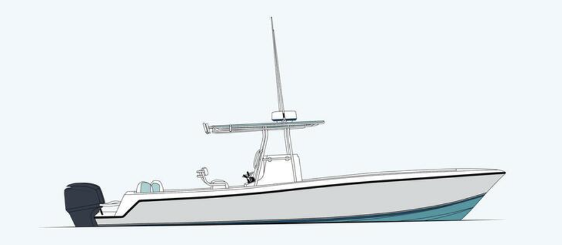

[App name]Know when to go.Seas, wind and tides along your whole route, checked against your limits. And the people who worry about you can watch you cross, live, from one link.
[Boat crossing live on a map; Mom’s phone on shore shows “On the way · ETA 12:40”]
About 2 minutes. Free while we test it with friends.
Step {{stepNum}} of 7
{{title}}
This is a planning aid, not a navigation tool.Forecasts can be wrong. Use your charts, plotter, VHF and your own eyes. The captain always decides.The family link is a courtesy. It never replaces a VHF radio, an EPIRB or calling the Coast Guard.
Final wording to be reviewed by an attorney before launch.
A few quick questions. Talk, type or tap an answer. I'll fill in the forms and you check them.
{{m.text}}
Question {{qNum}} of 7
Type an answer…
No signal? Tap the answers or use the keyboard. You can skip and fill the forms yourself.

{{boatTitle}}
✓ Photo added
No photo? Skip it. You'll see a simple outline for your boat type until you add one.
{{filledNote}}
{{r.label}}{{r.value}}
Edit
One thing I missed: about how much fuel do you burn at cruise?
Your limits decide GO or NO-GO. Start from a preset, then adjust.
{{s.label}}{{s.value}}
Pick your usual crossing. You can add more later, and the trip home flips it.
[Map preview of {{routeName}}]
Who should get your float plan and the link to follow you? They don't need the app.
{{c.initial}}{{c.name}}{{c.how}}
{{c.tag}}
They get: your float plan when you start, waypoint pings, "Made it" when you arrive, and an alert if you're overdue.
Three quick things so tracking works on the water.Your location is only shared while a trip is running, and stops when you arrive.
You're setHere's your first answer.
Tomorrow · {{routeName}}
GOBest departure 7:00 AM. Seas 2–3 ft, wind SE 10 kt.
Tips• {{followNote}}• Add it to your Home Screen: Share → Add to Home Screen• Change anything later in ☰ Menu → Setup